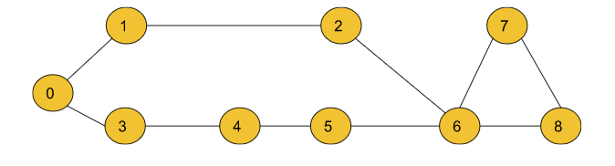
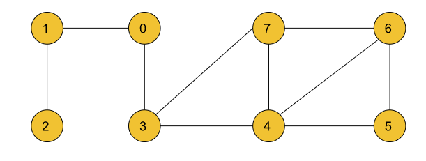
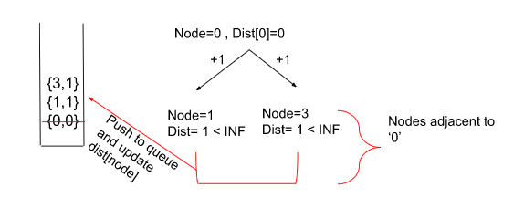
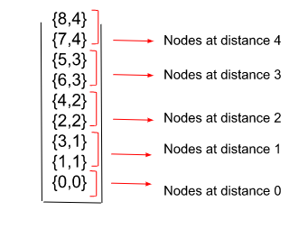

Shortest Path in Undirected Graph with unit distance: G-28
Given an Undirected Graph having unit weight, find the shortest path from the source to all other nodes in this graph. In this problem statement, we have assumed the source vertex to be ‘0’. If a vertex is unreachable from the source node, then return -1 for that vertex.
Example 1:
Input:
n = 9, m = 10
edges = [[0,1],[0,3],[3,4],[4 ,5],[5, 6],[1,2],[2,6],[6,7],[7,8],[6,8]]
src=0
Output: 0 1 2 1 2 3 3 4 4
Explanation:
The above output array shows the shortest path to all
the nodes from the source vertex (0), Dist[0] = 0,
Dist[1] = 1 , Dist[2] = 2 , …. Dist[8] = 4
Where Dist[node] is the shortest path between src and
the node. For a node, if the value of Dist[node]= -1,
then we conclude that the node is unreachable from
the src node.
Example 2:
Input:
n = 8, m = 10
Edges =[[1,0],[2,1],[0,3],[3,7],[3,4],[7,4],[7,6],[4,5],[4,6],[6,5]]
src=0
Output: 0 1 2 1 2 3 3 2
Explanation:
The above output list shows the shortest path to all the
nodes from the source vertex (0), Dist[0] = 0,
Dist[1] = 1, Dist[2] = 2,.....Dist[7] = 2
Solution
Disclaimer: Don’t jump directly to the solution, try it out yourself first.
Approach:
According to intuition, we will calculate the shortest path in an undirected graph having unit weights by using the Breadth First Search. BFS is a traversal technique where we visit the nodes level-wise, i.e., it visits the same level nodes simultaneously, and then moves to the next level.
Initial configuration:
Adjacency List: Create an adjacency list of the formed vector of pairs of size ‘N’, where each index denotes a node ‘u’ and contains a vector that consists of pairs denoting the adjacent nodes ‘v’ and the distance to that adjacent node from initial node ‘u’.
Queue: Define a queue data structure to store the BFS traversal.
Distance Array: Initialise this array by Max Integer value and then update the value for each node successively while calculating the shortest distance between the source and the current node.
Resultant Array: Initialised with -1, this array stores the updated shortest distances from the source node after completion of the algorithm. The index which remains as -1 is said to be unreachable from the source node. This is required to return the answer according to the question.
The shortest path in an undirected graph can be calculated by the following steps:
Firstly, we convert the graph into an adjacency list which displays the adjacent nodes for each index represented by a node.
Now, we create a dist array of size N initialized with a very large number which can never be the answer to indicate that initially, all the nodes are untraversed.
In every iteration, pick up the front() node, and then traverse for its adjacent nodes. For every adjacent node, we will relax the distance to the adjacent node if (dist[node] + 1 < dist[adjNode]). Here dist[node] means the distance taken to reach the current node, and ‘1’ is the edge weight between the node and the adjNode. We will relax the edges if this distance is shorter than the previously taken distance. Every time a distance is updated for the adjacent node, we push that into the Queue with the increased distance.
Let us understand it using an example below,

Where nodes ‘1’ and ‘3’ are adjacent to node ‘0’.
Once all the nodes have been iterated, the dist[] array will store the shortest paths.
Create a resultant array and initialize it by -1 and put all the distances which are updated in the resultant array. If anyone still holds the Large Integer value which we assigned at the start, it means it is not reachable, and we don’t update our resultant array. The node which still remains marked as -1 is unreachable from the source node.
Intuition:
For finding the shortest path in an undirected graph with unit weight, the technique we use is the Breadth-First Search (BFS). Now, the question arises why do we use the BFS technique in finding the shortest path here when we could’ve easily used other standard graph shortest path algorithms to implement the same? If we start traversal from the src node, we move to other adjacent nodes, everyone is at a distance of 1, so everyone goes into the queue, then subsequently we get the next set of nodes at 1 more distance, making the distance to 2, and if you look at the queue closely, it will look something like below. Queue here acts as a sorted Queue, hence we don’t need any sorted ds which we generally require in the other graph algorithms.

Note: If you wish to see the dry run of the above approach, you can watch the video attached to this article.
Code:
#include<bits/stdc++.h>
using namespace std;
class Solution {
public:
vector<int> shortestPath(vector<vector<int>>& edges, int N,int M, int src){
//Create an adjacency list of size N for storing the undirected graph.
vector<int> adj[N];
for(auto it : edges) {
adj[it[0]].push_back(it[1]);
adj[it[1]].push_back(it[0]);
}
//A dist array of size N initialised with a large number to
//indicate that initially all the nodes are untraversed.
int dist[N];
for(int i = 0;i<N;i++) dist[i] = 1e9;
// BFS Implementation.
dist[src] = 0;
queue<int> q;
q.push(src);
while(!q.empty()) {
int node = q.front();
q.pop();
for(auto it : adj[node]) {
if(dist[node] + 1 < dist[it]) {
dist[it] = 1 + dist[node];
q.push(it);
}
}
}
// Updated shortest distances are stored in the resultant array ‘ans’.
// Unreachable nodes are marked as -1.
vector<int> ans(N, -1);
for(int i = 0;i<N;i++) {
if(dist[i] != 1e9) {
ans[i] = dist[i];
}
}
return ans;
}
};
int main(){
int N=9, M=10;
vector<vector<int>> edges= {{0,1},{0,3},{3,4},{4,5},{5,6},{1,2},{2,6},{6,7},{7,8},{6,8}};
Solution obj;
vector<int> ans = obj.shortestPath(edges,N,M,0);
for(int i=0;i<ans.size();i++){
cout<<ans[i]<<" ";
}
return 0;
}
Output:
0 1 2 1 2 3 3 4 4
Time Complexity: O(M) { for creating the adjacency list from given list ‘edges’} + O(N + 2M) { for the BFS Algorithm} + O(N) { for adding the final values of the shortest path in the resultant array} ~ O(N+2M).
Where N= number of vertices and M= number of edges.
Space Complexity: O( N) {for the stack storing the BFS} + O(N) {for the resultant array} + O(N) {for the dist array storing updated shortest paths} + O( N+2M) {for the adjacency list} ~ O(N+M) .
Where N= number of vertices and M= number of edges.
import java.util.*;
import java.lang.*;
import java.io.*;
class Main{
public static void main(String[] args) throws IOException{
int n=9, m=10;
int[][] edge = {{0,1},{0,3},{3,4},{4,5},{5,6},{1,2},{2,6},{6,7},{7,8},{6,8}};
Solution obj = new Solution();
int res[] = obj.shortestPath(edge,n,m,0);
for(int i=0;i<n;i++){
System.out.print(res[i]+" ");
}
System.out.println();
}
}
class Solution {
public int[] shortestPath(int[][] edges,int n,int m ,int src) {
//Create an adjacency list of size N for storing the undirected graph.
ArrayList<ArrayList<Integer>> adj = new ArrayList<>();
for(int i = 0;i<n;i++) {
adj.add(new ArrayList<>());
}
for(int i = 0;i<m;i++) {
adj.get(edges[i][0]).add(edges[i][1]);
adj.get(edges[i][1]).add(edges[i][0]);
}
//A dist array of size N initialised with a large number to
//indicate that initially all the nodes are untraversed.
int dist[] = new int[n];
for(int i = 0;i<n;i++) dist[i] = (int)1e9;
dist[src] = 0;
// BFS Implementation
Queue<Integer> q = new LinkedList<>();
q.add(src);
while(!q.isEmpty()) {
int node = q.peek();
q.remove();
for(int it : adj.get(node)) {
if(dist[node] + 1 < dist[it]) {
dist[it] = 1 + dist[node];
q.add(it);
}
}
}
// Updated shortest distances are stored in the resultant array ‘ans’.
// Unreachable nodes are marked as -1.
for(int i = 0;i<n;i++) {
if(dist[i] == 1e9) {
dist[i] = -1;
}
}
return dist;
}
}
Output:
0 1 2 1 2 3 3 4 4
Time Complexity: O(M) { for creating the adjacency list from given list ‘edges’} + O(N + 2M) { for the BFS Algorithm} + O(N) { for adding the final values of the shortest path in the resultant array} ~ O(N+2M).
Where N= number of vertices and M= number of edges.
Space Complexity: O( N) {for the stack storing the BFS} + O(N) {for the resultant array} + O(N) {for the dist array storing updated shortest paths} + O( N+2M) {for the adjacency list} ~ O(N+M) .
Where N= number of vertices and M= number of edges.
Special thanks to Priyanshi Goel for contributing to this article on takeUforward. If you also wish to share your knowledge with the takeUforward fam, please check out this article. If you want to suggest any improvement/correction in this article please mail us at write4tuf@gmail.com